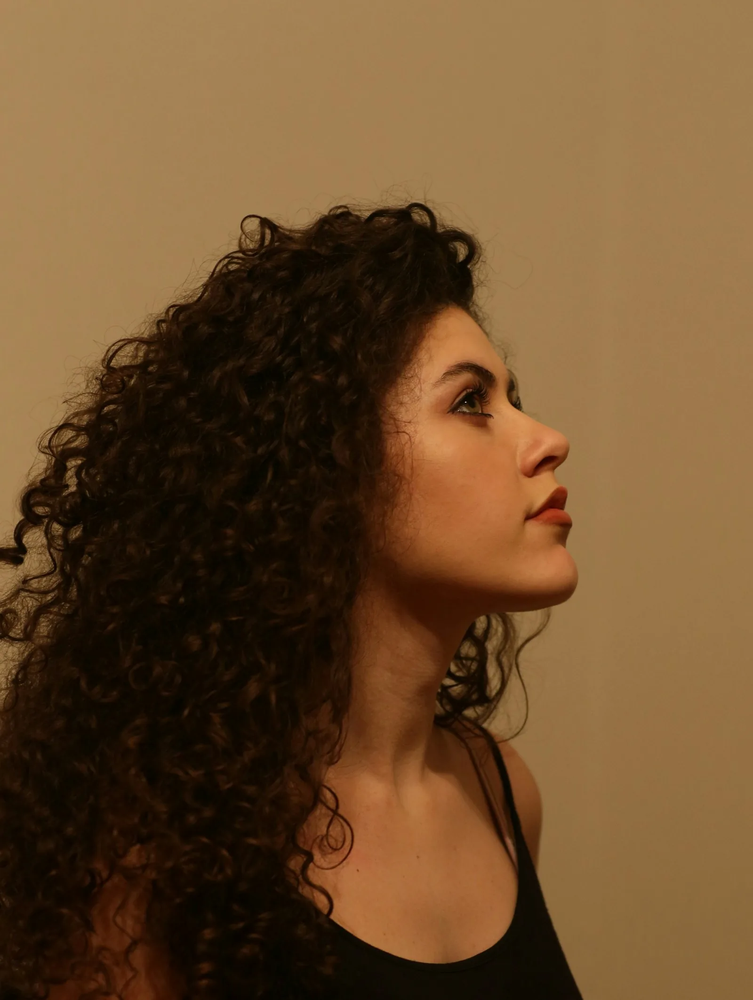
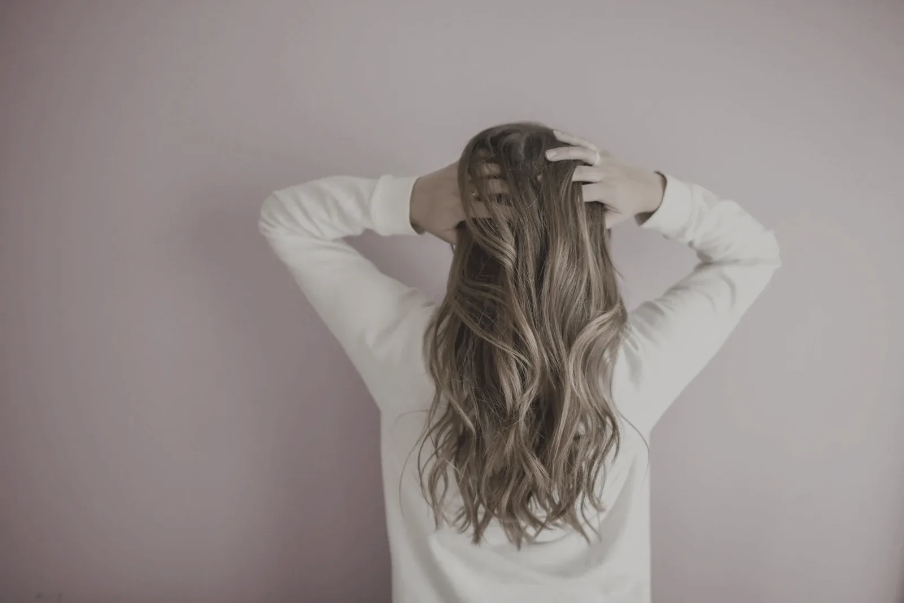
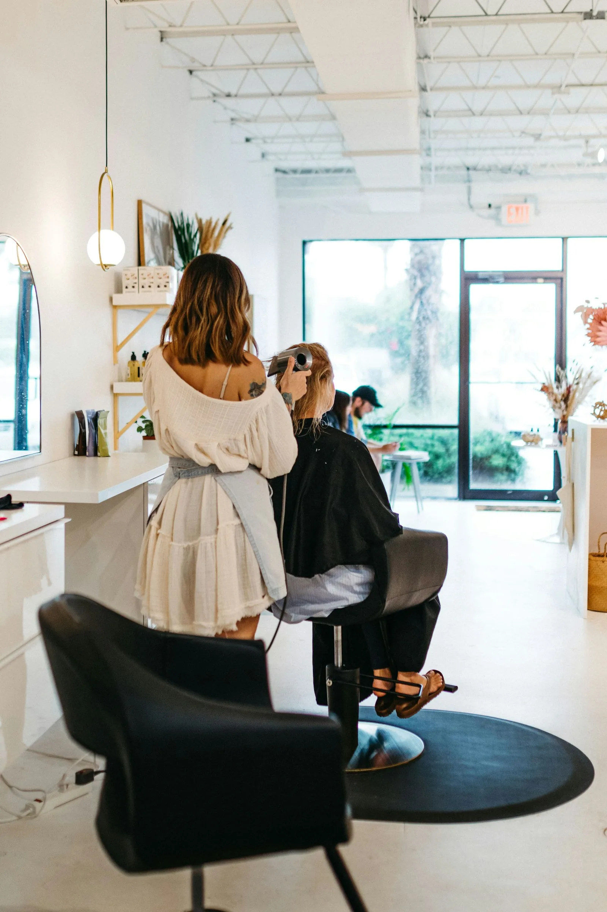
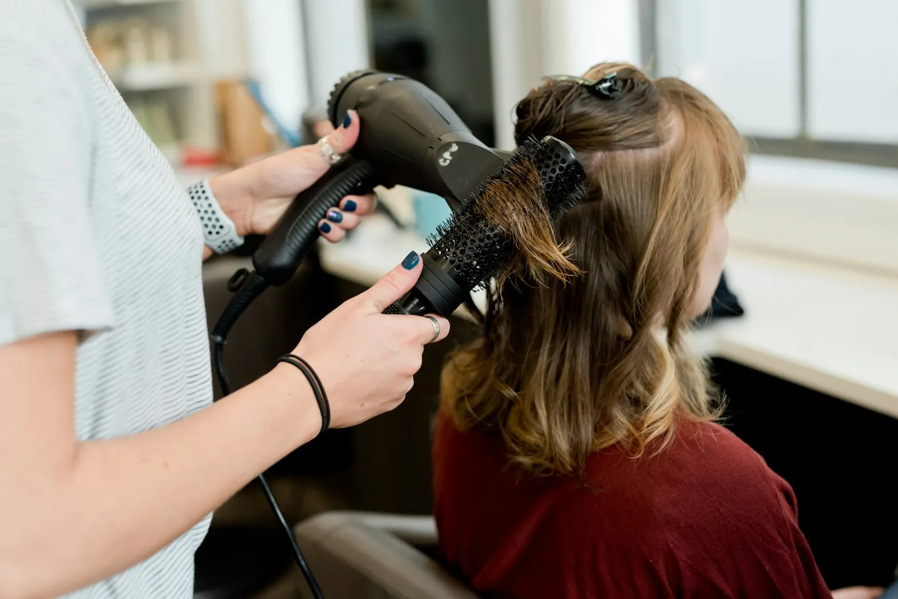
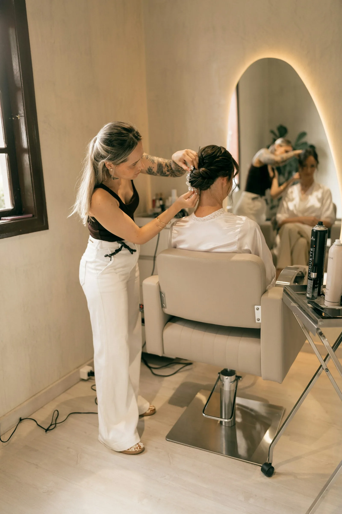
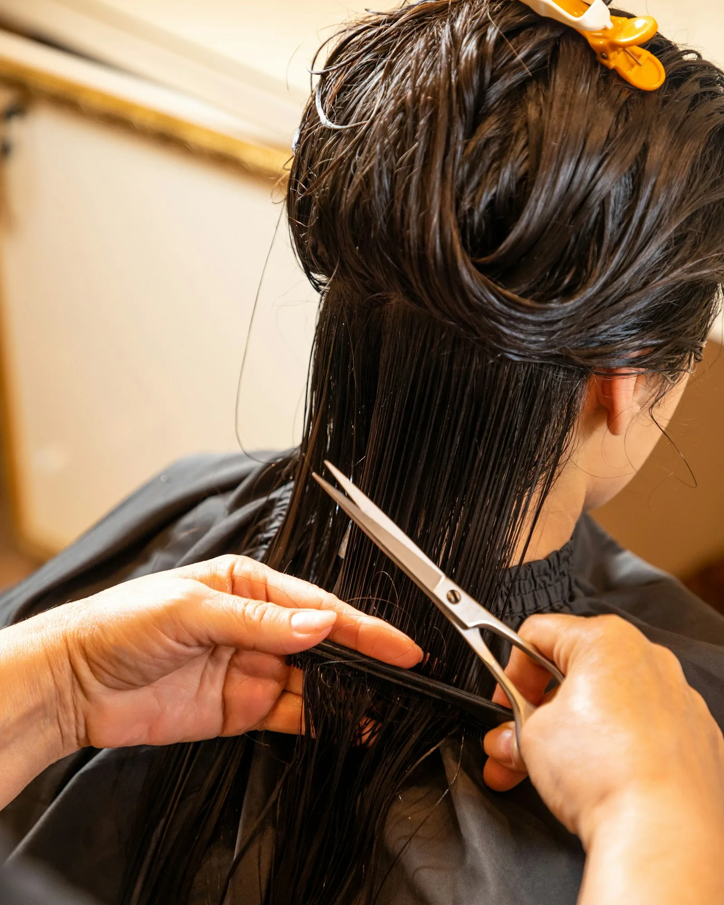
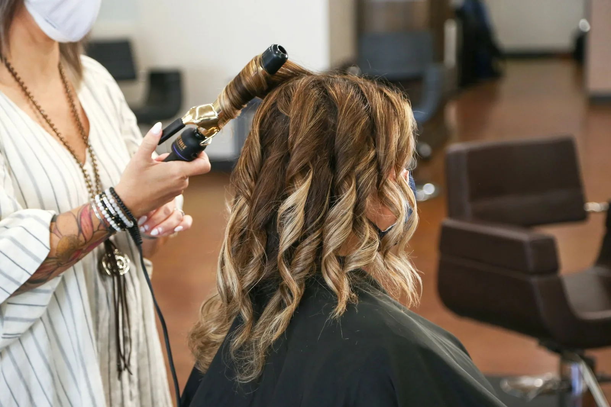
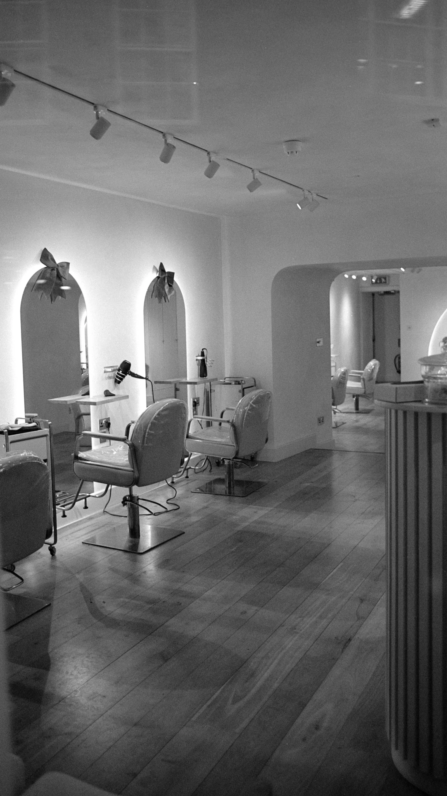

Peluquería en Gràcia · Barcelona
Tu pelo,
a su ritmo.
Corte, color y cuidado del rizo en un salón tranquilo, con tiempo para escucharte. Productos veganos y sin amoniaco.

Servicios
Lo que hacemos,
y cuánto cuesta.
Precios para pelo corto y medio. Antes de cualquier cambio grande te hacemos una consulta gratuita de diez minutos.
Ver la carta completa- Corte y peinado38 €
- Corte de rizos en seco48 €
- Color sin amoniacodesde 42 €
- Balayage95 €
- Tratamiento hidratante con masaje28 €
- Corte de caballero22 €
- Peinado de novia (con prueba)desde 180 €
- Corte infantil16 €

Color
Mechas que crecen bonitas.
Trabajamos el color a mano alzada y sin marcar la raíz, para que a los tres meses siga quedando bien y no dependas de retocar cada cuatro semanas.
Desliza la imagen para comparar.
Reservar colorEl salón
Una cita sin prisas.
- 01
Hablamos primero
Un café y cinco minutos para entender qué quieres y cómo te peinas en casa.
- 02
Lavado con masaje
Masaje craneal con aceites en un lavacabezas con vistas al patio.
- 03
El tiempo que haga falta
Reservamos para cada servicio el tiempo real que necesita. Nadie espera.
- 04
Te explicamos cómo mantenerlo
Sales sabiendo qué productos usar y cómo repetir el peinado tú sola.


Opiniones
Lo que dicen nuestras clientas.
«Por fin alguien que sabe cortar rizos. Me explicó cómo peinarlos en casa y ha cambiado todo.»
«El balayage es precioso y, tres meses después, sigue creciendo bonito.»
«Vengo desde hace años. El masaje del lavado ya vale la visita, y el color siempre me lo clavan.»
Trabajos recientes
Recién salidos del sillón.



Equipo
Cuatro estilistas, cada uno en lo suyo.
- NúriaFundadora · color y balayage
- JanCorte de mujer y caballero
- AishaRizo y pelo afro
- PolMechas a mano alzada

Reserva online
Elige día y hora en un minuto.
Confirmación al momento y recordatorio el día antes. Y cada 10 visitas, la siguiente corre de nuestra cuenta.
Reservar cita¿Tienes una peluquería?
Esta web podría ser la tuya.
ONDA es un ejemplo. Diseño webs como esta para salones reales, con tus fotos, tus precios y reserva online.